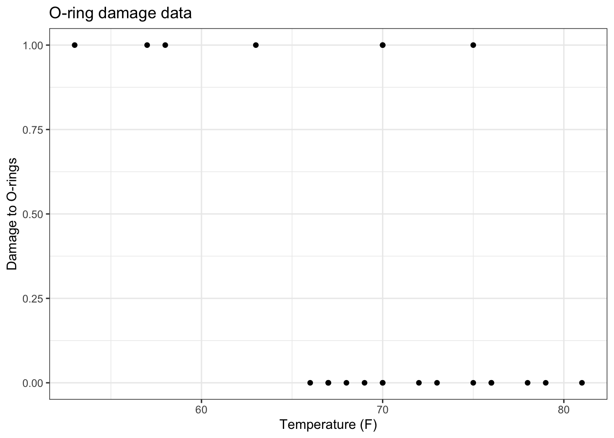
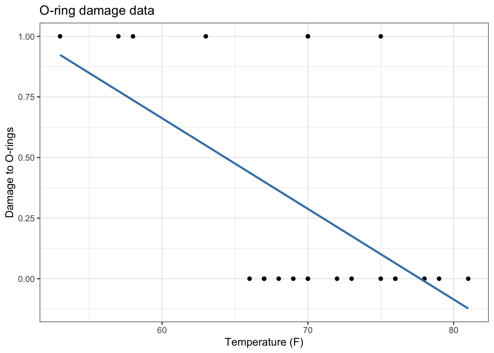
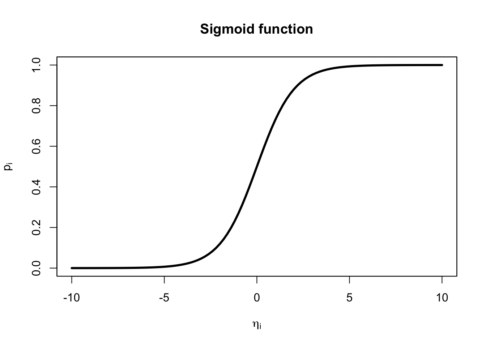

View libraries and data used in these notes
library(tidyverse)
library(tidymodels)
orings = read_csv("https://sta221-fa25.github.io/data/orings.csv")library(tidyverse)
library(tidymodels)
orings = read_csv("https://sta221-fa25.github.io/data/orings.csv")

In January 1986, the space shuttle Challenger exploded 73 seconds after launch.
The culprit is the O-ring seals in the rocket boosters. At lower temperatures, rubber becomes more brittle and is a less effective sealant. At the time of the launch, the temperature was 31°F.
Could the failure of the O-rings have been predicted?
Data: 23 previous shuttle missions. Each shuttle had 2 boosters, each with 3 O-rings. We know whether or not at least one of the orings was damaged and the launch temperature.
orings %>%
print(n = Inf)# A tibble: 23 × 3
mission temp damage
<dbl> <dbl> <dbl>
1 1 53 1
2 2 57 1
3 3 58 1
4 4 63 1
5 5 66 0
6 6 67 0
7 7 67 0
8 8 67 0
9 9 68 0
10 10 69 0
11 11 70 1
12 12 70 0
13 13 70 1
14 14 70 0
15 15 72 0
16 16 73 0
17 17 75 0
18 18 75 1
19 19 76 0
20 20 76 0
21 21 78 0
22 22 79 0
23 23 81 0Notice any patterns?
orings %>%
mutate(failrate = damage) %>%
ggplot(mapping = aes(x = temp, y = failrate)) +
geom_point() +
labs(x = "Temperature (F)", y = "Damage to O-rings", title = "O-ring damage data") +
theme_bw()
orings %>%
mutate(failrate = damage) %>%
ggplot(mapping = aes(x = temp, y = failrate)) +
geom_point() +
labs(x = "Temperature (F)", y = "Damage to O-rings", title = "O-ring damage data") +
theme_bw() +
geom_smooth(method = lm, se = FALSE, color = "steelblue")
\[ \begin{aligned} Prob(Y_i = 1) &= p\\ Prob(Y_i = 0) &= (1-p) \end{aligned} \] ::: panel-tabset ## Exercise
What is \(E[Y_i|p]\)?
\[ \begin{aligned} E[Y_i|p] &= \sum_{Y_i = 0}^1 Y_i \cdot prob(Y_i)\\ &= 0 \cdot prob(Y_i = 0) + 1 \cdot prob(Y_i = 1)\\ &= 0 \cdot (1-p) + 1 \cdot p\\ &= p \end{aligned} \]
In linear regression, we are concerned with modeling the conditional expectation of the outcome variable. (Previously: \(E[y|X] = X\beta\)).
Here, the conditional expectation \(E[Y_i | p] = p\).
If \(p = 0.5\), what does the statemeny \(E[Y_i | p] = p\) say, in terms of the data at hand? Is this assumption realistic?
That the probability of O-ring failure is 0.5 for all observations.
Not realistic given EDA above.
We want to have individual observation probabilities \(p_i\) that depends on the covariate temperature.
What’s wrong with letting \(p_i = x_i \beta\)?
\(p_i\) is bounded between \([0, 1]\), \(x_i \beta\) is not. See figure above again.
Remedy: let
\[ \text{logit}(p_i) = x_i^T\beta \]
where \(\text{logit}(p_i) = \log \frac{p_i}{1-p_i}\). Since the logit function links our conditional expectation to the predictor(s), we call the logit function a link function.
What happens as \(p_i \rightarrow 0\)?
What happens as \(p_i \rightarrow 1\)?
\[ p_i = \frac{e^{\eta_i}}{1 + e^{\eta_i}} = \frac{1}{e^{-\eta_i}+ 1}, \]
where the second equality comes from multiplying by 1 in a fancy way: \(\frac{e^{-\eta_i}}{e^{-\eta_i}}\) and \(\eta_i = x_i^T\beta = \beta_0 + \beta_1 x_1 + \ldots\) is called the linear predictor or systematic component.
\[ \eta_i = \beta_0 + \beta_1 x_{i1} + \cdots + \beta_{q} x_{iq} = \mathbf{x}_i^T \boldsymbol{\beta} \] The function \(p_i = \frac{e^{\eta_i}}{1 + e^{\eta_i}}\) has a special name. It is called a “sigmoid” function. Let’s take a look at the sigmoid function:

Here’s our model:
\[ E[Y_i | X] = p_i = \frac{1}{e^{-x_i^T\beta}+ 1} \]
The likelihood of the data is the joint density of the data, viewed as a function of the unknown parameters:
\[ \begin{aligned} \underbrace{p(y_1, \ldots, y_n| X, \beta)}_{\text{joint density of data}} &= \prod_{i=1}^n p(y_i|X, \beta)\\ &= \prod_{i=1}^np_i^{y_i} (1-p_i)^{1-y_i} \end{aligned} \]
Practically, we want to examine the log-likelihood for numerical stability. Recall: maximizing the log-likelihood (finding \(\hat{\beta}_{MLE}\)) will be the same as maximizing the likelihood since \(\log()\) is a monotonic function.
\[ \begin{aligned} \log p(y_1, \ldots, y_n | X,\beta) &= \sum_{i=1}^n y_i \log(p_i) + (1-y_i) \log(1 - p_i) \end{aligned} \] Plugging in \(p_i\), we view the log-likelihood as a function of the unknown parameter vector \(\beta\), and we can simplify:
\[ \begin{aligned} \log L(\beta) &= \sum_{i=1}^n y_i \log \left(\frac{e^{x_i^T\beta}}{1 + e^{x_i^T\beta}} \right) + (1-y_i) \log \left(\frac{1}{1 + e^{x_i^T\beta}} \right)\\ &= \sum_{i=1}^n y_i x_i^T \beta - \sum_{i=1}^n \log(1+ \exp\{x_i^T \beta\}) \end{aligned} \]
\[ \begin{aligned} \frac{\partial \log L}{\partial \boldsymbol\beta} =\sum_{i=1}^n y_i x_i^\top &- \sum_{i=1}^n \frac{\exp\{x_i^\top \boldsymbol\beta\} x_i^\top}{1+\exp\{x_i^\top \boldsymbol\beta\}} \end{aligned} \]
If we set this to zero, there is no closed form solution.
R uses numerical approximation to find the MLE.
orings_fit <- glm(damage ~ temp,
data = orings,
family = "binomial")
summary(orings_fit)
Call:
glm(formula = damage ~ temp, family = "binomial", data = orings)
Coefficients:
Estimate Std. Error z value Pr(>|z|)
(Intercept) 15.0429 7.3786 2.039 0.0415 *
temp -0.2322 0.1082 -2.145 0.0320 *
---
Signif. codes: 0 '***' 0.001 '**' 0.01 '*' 0.05 '.' 0.1 ' ' 1
(Dispersion parameter for binomial family taken to be 1)
Null deviance: 28.267 on 22 degrees of freedom
Residual deviance: 20.315 on 21 degrees of freedom
AIC: 24.315
Number of Fisher Scoring iterations: 5orings_aug =
augment(orings_fit) Now we can predict the failure probability. The failure probability at 31F is nearly 1.
test_31F = tibble(temp = seq(25, 85, 0.1),
predprob = predict(orings_fit, newdata = tibble(temp = temp), type = "response"))
test_31F %>%
ggplot() +
geom_line(mapping = aes(x = temp, y = predprob)) +
geom_vline(xintercept = 31) +
labs(x = "Temperature (F)", y = "Predicted failure probability") +
theme_bw()
Thanks to Prof. Hua Zhou for example.